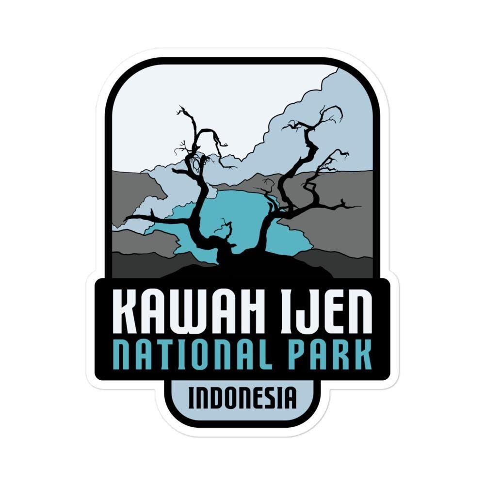

Galeri Foto



Fenomena Blue Fire dan Danau Kawah Terluas di Dunia
Kawah Ijen adalah kawah gunung berapi aktif yang terletak di perbatasan Kabupaten Banyuwangi dan Bondowoso, Jawa Timur. Kawah ini memiliki danau asam berwarna toska yang tercatat sebagai danau kawah paling asam terbesar di dunia, dengan diameter sekitar 1 kilometer.
Daya tarik utamanya adalah fenomena blue fire atau api biru, yaitu nyala api berwarna biru dari gas belerang yang terbakar, dan hanya bisa disaksikan secara jelas menjelang dini hari sebelum matahari terbit. Fenomena ini hanya ada di dua tempat di dunia, salah satunya di Kawah Ijen.
Selain blue fire, wisatawan juga bisa melihat langsung aktivitas penambang belerang tradisional yang memikul beban berat dari dasar kawah menuju pos penampungan.
Peta penanda lokasi Kawah Ijen:
| Kategori | Keterangan |
|---|---|
| Jam buka pos pendakian | 00.00 - 06.00 WIB (mulai pendakian dini hari) |
| Tiket wisatawan domestik | Rp 5.000 (hari kerja) - Rp 7.500 (akhir pekan) |
| Tiket wisatawan mancanegara | sekitar Rp 150.000 |
| Waktu tempuh trekking | ± 2 - 3 jam naik, kondisi jalur menanjak dan berbatu |
| Waktu terbaik kunjungan | Musim kemarau, April - Oktober |
| Perlengkapan wajib | Jaket tebal, senter/headlamp, masker gas |